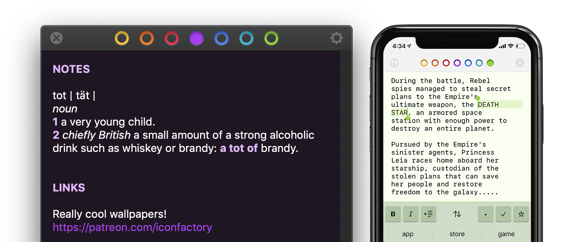

An elegant, simple way to collect & edit text on your Mac, iPhone, and iPad.
-
Less Is More
Tot’s single window design and simple formatting controls mean no more hunting for that chunk of text.
-
iCloud Sync
Seamlessly syncs your text across iOS and macOS using iCloud, so you can capture thoughts wherever you are.
-
Dark / Light Mode
Designed to look stunning both day and night, Tot takes full advantage of iOS and macOS themes.
-
Markdown Support
Full support for rich or plain text and even automatically translates text to Markdown for handy use on the web.
-
Small Footprint
Stays out of the way on the desktop with minimal chrome and can even be controlled via the Menu bar.
-
Killer Keyboard
Tot puts common text operations on the keyboard and keeps track of word and character counts as you type.
What’s Everyone Saying?
“It’s just a great little utility.”
“...an excellent alternative...”
“Tot...strikes a great balance of form and function; its novel navigation system is perfectly tailored for a scratchpad...”
“The beauty of the app is in its simplicity.”
“A uniquely opinionated app, razor-focused on capturing quick notes and scrappy ideas.”
“Tot has become a key part of my life already...”
“A quintessential version of what a Mac or iOS app should be.”
Give Tot a try.
Free on the Mac App Store. Pay once on iOS.